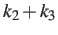
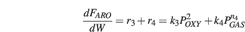
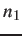
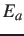
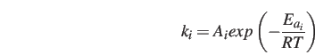

Next: Concluding Remarks Up: Results and Discussion Previous: Oxygenates as Reactant (Steps
All data discussed in above sections was measured at 400     C,
while the reaction orders (C) are used.
Reaction activation energies (C) were used to obtain the corresponding
C,
while the reaction orders (C) are used.
Reaction activation energies (C) were used to obtain the corresponding  values.
The reaction activation energies (E
values.
The reaction activation energies (E
The activation energy of step R1 (glycerol dehydration to acrolein) has been reported over a wide range in the literature.
Talebian-Kiakalaieh et al. presented a value of 27.5 kJ/mol over tungstosilicic acid catalyst[#!Talebian-Kiakalaieh2015!#],
while Qadariyah et al. have 39.6 kJ/mol in subcritical or supercritical water (temperature 200-400 C, pressure 30 MPa) without any catalyst [#!Qadariyah2011!#].
Watanabe et al. reported 146 kJ/mol at 300-400 C with H SOC over zinc sulfate catalyst [#!Ott2006!#].
Our result described in Table 3 is in the reported range of 27.5-146 kJ/mol.
The activation energy of step R2 is smaller than that of step R3 by 26 kJ/mol,
indicating step R2 dominates in the reaction pathway as compared to step R3 (see also the relative
SOC over zinc sulfate catalyst [#!Ott2006!#].
Our result described in Table 3 is in the reported range of 27.5-146 kJ/mol.
The activation energy of step R2 is smaller than that of step R3 by 26 kJ/mol,
indicating step R2 dominates in the reaction pathway as compared to step R3 (see also the relative  values in Table 2).
As a series reaction, step R4, with a slightly higher activation energy, follows step R2.
values in Table 2).
As a series reaction, step R4, with a slightly higher activation energy, follows step R2.
With the obtained kinetic parameters, the rates for all four steps for all the 80 experimental data points (at various temperatures, reactant feed flows and catalyst packing amounts) were calculated. The experimental and predicted flow rates for all species are plotted in Figure 7, giving an RMS error of 6.1%, indicating good fits.
Yang Xiao 2017-12-05